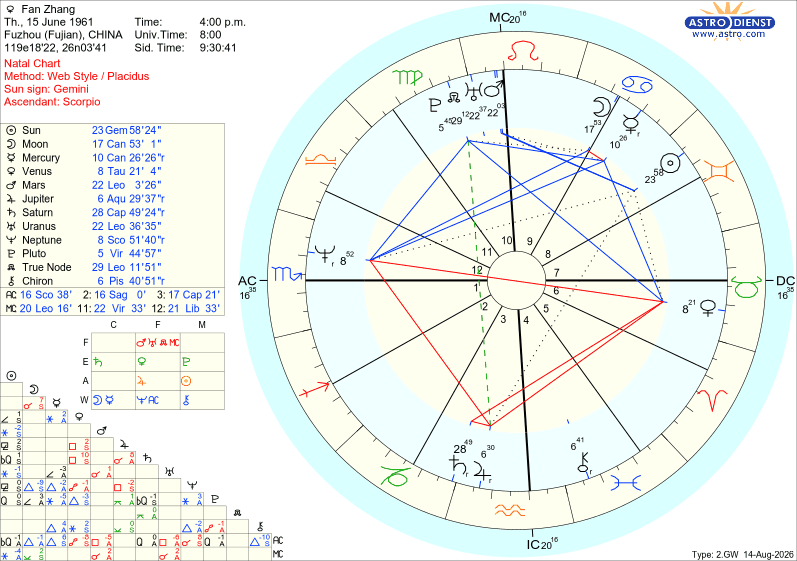
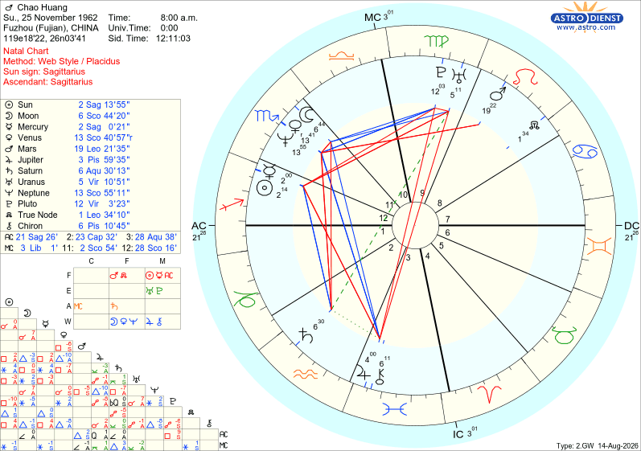

太阳
♏ 天蝎

| 行星 | 星座 | 度数 | 状态 | |
|---|---|---|---|---|
| ☉ | 太阳 | ♏ 天蝎 | 4°01'28" | — |
| ☽ | 月亮 | ♋ 巨蟹 | 3°11'58" | 入庙 |
| ☿ | 水星 | ♏ 天蝎 | 19°08'32" | — |
| ♀ | 金星 | ♍ 处女 | 17°36'52" | 落陷 |
| ♂ | 火星 | ♏ 天蝎 | 7°35'29" | 入庙 |
| ♃ | 木星 | ♍ 处女 | 8°48'16" | 落陷 |
| ♄ | 土星 | ♒ 水瓶 | 0°37'41" | 入庙 R |
| ♅ | 天王星 | ♑ 摩羯 | 10°27'40" | R |
| ♆ | 海王星 | ♑ 摩羯 | 14°15'54" | R |
| ♇ | 冥王星 | ♏ 天蝎 | 19°38'41" | 入庙 |
| ☊ | 北交点 | ♑ 摩羯 | 12°14'38" | — |
| ⚷ | 凯龙星 | ♌ 狮子 | 9°04'28" | R |
五重天蝎能量：太阳、水星、火星、冥王星、上升全部在天蝎座 — 由内到外都是纯正的天蝎气质：极度敏锐、深沉、有穿透力。这是整张盘最突出的特征。
四颗入庙（月亮巨蟹、火星天蝎、冥王星天蝎、土星水瓶）— 非常罕见的强配置，意味着这些行星能量以最纯粹、最强的方式表达。
火星入庙天蝎是本盘最重要的能量之一：行动力极强、驱动力深层而不可阻挡，一旦认准目标就以惊人毅力推进到底。火星与太阳、水星、冥王星同宫，形成"洞察→决策→执行→转化"的完整闭环。
月亮巨蟹入庙：情感极度丰富细腻，对安全感、家庭归属有深刻需求。月亮与太阳、火星均呈三分相（120°水象和谐），直觉准、感受深、且能将感受转化为强大行动力。
南北交点轴线：南交巨蟹（月亮也在此），北交摩羯 — 灵魂课题是从情感依赖走向独立担当和社会成就。
MC狮子座：事业追求被认可、发光发热。中天守护星太阳落天蝎 — 事业方向适合需要深度洞察力的领域（心理学、研究、分析等）。

| 行星 | 星座 | 度数 | 宫位 | 状态 | |
|---|---|---|---|---|---|
| ☉ | 太阳 | ♊ 双子 | 23°58'24" | 7宫 | — |
| ☽ | 月亮 | ♋ 巨蟹 | 17°53'01" | 8宫 | — |
| ☿ | 水星 | ♋ 巨蟹 | 10°26'26" | 8宫 | R |
| ♀ | 金星 | ♉ 金牛 | 8°21'04" | 6宫 | 入庙 |
| ♂ | 火星 | ♌ 狮子 | 22°03'26" | 9宫 | — |
| ♃ | 木星 | ♒ 水瓶 | 6°29'37" | 3宫 | R |
| ♄ | 土星 | ♑ 摩羯 | 28°49'24" | 3宫 | 入庙 R |
| ♅ | 天王星 | ♌ 狮子 | 22°56'38" | 9宫 | R |
| ♆ | 海王星 | ♏ 天蝎 | 8°51'40" | 12宫 | R |
| ♇ | 冥王星 | ♍ 处女 | 5°44'57" | 10宫 | R |
| ☊ | 北交点 | ♍ 处女 | 29°11'51" | — | — |
| ⚷ | 凯龙星 | ♓ 双鱼 | ~10°51' | — | — |
双子太阳 + 天蝎上升：表面好奇善变、善于沟通、信息灵通（双子），但外在气质给人深沉、神秘、有洞察力的印象（天蝎上升）。这是一个"表里不一"的配置 — 轻松的外表下藏着极深的内核。
月亮巨蟹 + 水星巨蟹（8宫，逆行）：情感极度丰富细腻，月亮和水星同在巨蟹且同在8宫 — 直觉型思维、记忆力超群、对深层心理和隐秘事物有天然洞察力。水星逆行使思维更多内向反思。这是极强的心理学天赋配置。
金星金牛入庙（6宫）：在感情和价值观上极为务实稳定，忠诚持久，享受物质舒适和感官体验。6宫位置意味着通过日常工作和服务表达爱意。
火星狮子 + 天王星狮子（9宫，均合相）：行动力自信张扬，追求荣耀和认可。9宫位置意味着通过教育、旅行、哲学探索释放能量。天王星合相带来反叛传统教育的特质。
6颗行星逆行（水星、木星、土星、天王星、海王星、冥王星）— 非常显著的逆行配置。许多生命课题需要反复体验、内化后才能真正掌握，是一个极度内省的人。
海王星天蝎12宫逆行：深层直觉、神秘体验、潜在的心理敏感、疗愈能力。12宫的位置使这种灵性能力隐藏在潜意识深处。
冥王星处女10宫逆行：事业中经历深刻变革，完美主义驱动力，追求精细化的专业权威。
南北交点：南交双鱼（灵性逃避、模糊边界），北交处女（学习谦逊、服务他人、注重细节）— 灵魂方向是从模糊走向精准，从逃避走向实际服务。

| 行星 | 星座 | 度数 | 宫位 | 状态 | |
|---|---|---|---|---|---|
| ☉ | 太阳 | ♐ 射手 | 13°55' | 1宫 | — |
| ☽ | 月亮 | ♏ 天蝎 | 0°44'20" | 11宫 | — |
| ☿ | 水星 | ♐ 射手 | 0°21' | 1宫 | — |
| ♀ | 金星 | ♏ 天蝎 | 10°57' | 11宫 | — |
| ♂ | 火星 | ♌ 狮子 | 21°35' | 8宫 | — |
| ♃ | 木星 | ♓ 双鱼 | 29°35' | 3宫 | 入庙 |
| ♄ | 土星 | ♒ 水瓶 | 0°13' | 2宫 | 入庙 |
| ♅ | 天王星 | ♍ 处女 | 5°50' | 8宫 | R |
| ♆ | 海王星 | ♏ 天蝎 | 25°11' | 11宫 | R |
| ♇ | 冥王星 | ♍ 处女 | 3°23' | 8宫 | R |
| ☊ | 北交点 | ♌ 狮子 | 4°10' | 8宫 | — |
| ⚷ | 凯龙星 | ♓ 双鱼 | 10°45' | 3宫 | — |
太阳射手 + 上升射手：由内到外的射手座气质 — 乐观、自由、探索精神、哲学思辨。太阳在1宫意味着自我表达非常强烈，"我即旅程本身"。水星也在射手1宫，思维宏大、直言不讳、跨文化沟通能力强。
月亮天蝎 + 金星天蝎 + 海王星天蝎（11宫）：三颗行星在天蝎座聚集！虽然太阳是轻松的射手，但情感世界极其深沉浓烈。月亮天蝎 = 情感强烈、控制欲强、直觉极准；金星天蝎 = 爱即占有、全有或全无；海王星天蝎逆行 = 深层灵性直觉。这三颗星都在11宫（朋友/群体宫），意味着在社交中有强烈的情感投射。
8宫群星：火星 + 天王星 + 冥王星 + 北交点 — 极强的8宫配置。8宫掌管转化、危机、共享资源、神秘学。4颗行星在此意味着生命中必经重大危机与重生，对死亡、神秘学、心理学有深刻天赋。北交点也在8宫 — 灵魂课题是学习创造性地分享权力，从控制走向慷慨。
木星双鱼入庙（3宫）：木星守护射手（命主星）且入庙于双鱼 — 极强的灵性扩张力和慈悲心。3宫位置意味着通过沟通、学习、写作表达这种灵性智慧。木星合相凯龙星 — "受伤的治愈者"原型，有精神导师潜质。
土星水瓶入庙（2宫）：对金钱和价值观理性、独立、创新。可能大器晚成但基础稳固。入庙使这种结构感极为纯粹。
MC天秤座：事业追求和谐、平衡、人际关系与审美。通过外交、协调、美学达成社会成就。
天王星+冥王星处女8宫逆行：在深度转化领域追求完美和变革，逆行使这些能量更多向内运作。
| 维度 | 黄昕（女儿） | 张帆（妈妈） | Chao（爸爸） |
|---|---|---|---|
| 太阳 | ♏ 天蝎 | ♊ 双子 | ♐ 射手 |
| 月亮 | ♋ 巨蟹 入庙 | ♋ 巨蟹 | ♏ 天蝎 |
| 上升 | ♏ 天蝎 | ♏ 天蝎 | ♐ 射手 |
| 中天 | ♌ 狮子 | ♌ 狮子 | ♎ 天秤 |
| 金星 | ♍ 处女 | ♉ 金牛 入庙 | ♏ 天蝎 |
| 火星 | ♏ 天蝎 入庙 | ♌ 狮子 | ♌ 狮子 |
| 木星 | ♍ 处女 | ♒ 水瓶 | ♓ 双鱼 入庙 |
| 土星 | ♒ 水瓶 入庙 | ♑ 摩羯 入庙 | ♒ 水瓶 入庙 |
| 入庙数 | 4颗 | 2颗 | 2颗 |
| 逆行数 | 4颗 | 6颗 | 3颗 |
三人通过天蝎座深度连接 — 黄昕有5颗行星+上升在天蝎；妈妈张帆有上升+海王星在天蝎；爸爸Chao有月亮+金星+海王星在天蝎。天蝎座的深层洞察、情感强度、转化能力是整个家庭的核心能量。
黄昕和张帆的月亮都在巨蟹座！母女共享同样的情感模式 — 丰富的感受力、对家庭的重视、念旧情怀。黄昕的月亮入庙（最强状态），意味着她把母亲的情感能量发挥到了极致。
黄昕和张帆上升都在天蝎座 — 母女给人相似的第一印象：神秘、深沉、有洞察力。外在气质的传承非常明显，女儿继承了母亲的外在能量场。
黄昕和张帆中天都在狮子座 — 事业追求被认可、发光发热。母亲的事业能量通过中天传承给女儿，两人都渴望在职业领域展现个人魅力。
三人土星全部入庙！黄昕土星水瓶入庙、张帆土星摩羯入庙、Chao土星水瓶入庙 — 极为罕见。这意味着自律、责任感、结构化思维是家族的核心传承，且都以最纯粹的方式表达。黄昕和爸爸的土星都在水瓶座入庙 — 父女在独立思考和创新结构上有深层共鸣。
爸爸Chao的火星在狮子座，妈妈张帆的火星也在狮子座 — 父母二人共享火星狮子（自信、张扬、追求荣耀）。黄昕的火星在天蝎入庙，行动力更深沉、更执着 — 她把父母的"阳光式"行动力转化为了"深海式"驱动力。
张帆和Chao都有海王星在天蝎座（逆行）— 两人都有深层灵性直觉。黄昕虽然没有海王星在天蝎，但她天蝎群星的能量包含了同样的深层洞察力。灵性敏感是父母共同传给女儿的礼物。
三人太阳分别在天蝎（水）、双子（风）、射手（火）— 形成风-水-火的三角。妈妈的双子和爸爸的射手正好是对宫（180°），意味着父母在思维方式上一个灵活多元、一个宏观直接，互补性极强。黄昕的天蝎水象则整合了两者的能量，化为深层洞察。
母女关系（张帆 → 黄昕）：月亮同在巨蟹+上升同在天蝎+中天同在狮子 — 三重核心配置重叠。母女之间有极深的情感共鸣和气质相似性。但张帆的太阳在双子（轻快多变），黄昕的太阳在天蝎（深沉执着）— 表面气质相似，但核心自我很不同。妈妈可能觉得女儿"太重了"，女儿可能觉得妈妈"太轻了"。这种差异恰好是互补 — 妈妈教会女儿灵活，女儿教会妈妈深度。
父女关系（Chao → 黄昕）：土星同在水瓶入庙 — 父女在自律、独立思考、结构感上有深层共鸣。爸爸太阳射手（乐观自由），女儿太阳天蝎（深沉执着）— 爸爸的乐观可以给女儿带来 lighten up 的能量，女儿的深度可以给爸爸带来 grounding。爸爸的月亮在天蝎，女儿有5重天蝎 — 爸爸的情感世界与女儿的核心自我高度共振。
父母关系（张帆 ↔ Chao）：太阳双子和太阳射手是对宫（180°）— 经典的"互补型"伴侣。一个灵活多元、一个宏观直接。妈妈的上升天蝎与爸爸的月亮+金星+海王星天蝎形成共振 — 爸爸被妈妈的"神秘深沉"吸引，妈妈被爸爸的"乐观豁达"吸引。两人火星都在狮子 — 在行动力和追求荣耀上高度一致，但也可能在"谁说了算"上产生冲突。
| 行星 | 黄昕 | 张帆 | Chao | 传承关系 |
|---|---|---|---|---|
| ☽ 月亮 | ♋ 巨蟹 入庙 | ♋ 巨蟹（非入庙但同星座） | ♏ 天蝎 | 母女共享巨蟹月亮，女儿入庙强化 |
| ♀ 金星 | ♍ 处女 落陷 | ♉ 金牛 入庙 | ♏ 天蝎 | 妈妈的金星入庙弥补女儿的落陷 |
| ♂ 火星 | ♏ 天蝎 入庙 | ♌ 狮子 | ♌ 狮子 | 父母火星狮子→女儿火星天蝎入庙，转化升级 |
| ♃ 木星 | ♍ 处女 落陷 | ♒ 水瓶 | ♓ 双鱼 入庙 | 爸爸的木星入庙弥补女儿的落陷 |
| ♄ 土星 | ♒ 水瓶 入庙 | ♑ 摩羯 入庙 | ♒ 水瓶 入庙 | 三人全入庙！父女同水瓶，母亲摩羯 |
| ♇ 冥王星 | ♏ 天蝎 入庙 | ♍ 处女 | ♍ 处女 | 父母冥王处女→女儿冥王天蝎入庙，深化转化 |